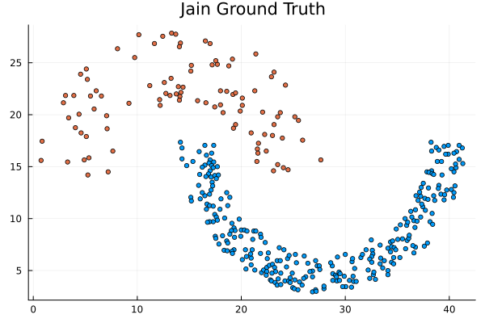
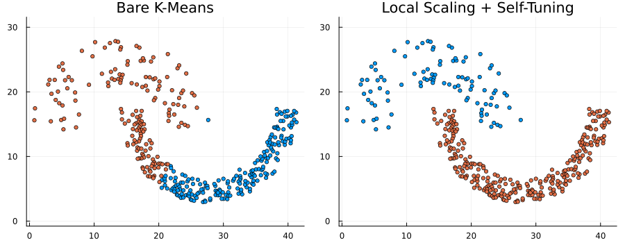

Comparison of Kmeans vs different Spectral Clustering variants
This page compares bare K-Means with several spectral clustering variants on the public Jain dataset.
The Jain dataset consists of two labeled clusters in two dimensions. Each row of the source file contains an $x$ coordinate, a $y$ coordinate, and a class label. Because the data is two-dimensional, the dataset can be inspected directly with a scatter plot before and after clustering.
The comparison includes:
- bare K-Means on the raw coordinates
- spectral clustering with an
RBFKernel - spectral clustering with
LocalScaling - the three exported discretizers:
KMeansDiscretization,SelfTuningDiscretization, andSVDDiscretization
Dataset source: https://cs.joensuu.fi/sipu/datasets/
Example Setup
using SpectralClustering
using Clustering
using DelimitedFiles
using Plots
using Random
using Statistics
using LinearAlgebrafunction load_jain_dataset()
path = joinpath(dirname(dirname(@__DIR__)), "benchmark", "jain.txt")
raw = readdlm(path)
X = Matrix{Float64}(raw[:, 1:2])'
y_raw = Int.(raw[:, 3])
labels = sort(unique(y_raw))
label_map = Dict(label => i for (i, label) in enumerate(labels))
y = [label_map[label] for label in y_raw]
return X, y
end
function pairwise_distances(X)
distances = Float64[]
n_samples = size(X, 2)
for i in 1:(n_samples - 1)
for j in (i + 1):n_samples
push!(distances, norm(X[:, i] - X[:, j]))
end
end
return distances
end
X, y = load_jain_dataset()
k = length(unique(y))
# A small RBF width works well on this dataset; we use the 5th percentile of
# pairwise distances as a simple data-driven heuristic.
sigma = quantile(pairwise_distances(X), 0.05)
(size(X), length(y), round(sigma, digits=3))((2, 373), 373, 2.295)Dataset Visualization
The scatter plot below shows the original coordinates and the ground-truth class labels from the dataset.
scatter(
X[1, :],
X[2, :],
group=y,
legend=false,
markersize=3,
aspect_ratio=:equal,
title="Jain Ground Truth",
)
Run the Comparison
For all runs below, we fix k = 2 and evaluate two affinity constructions:
RBFKernel(sigma=sigma)withsigmaestimated from the dataLocalScaling(3)
The reported metrics are:
- ARI (Adjusted Rand Index)
- NMI (Normalized Mutual Information)
function evaluate_methods(X, y, sigma)
k = length(unique(y))
methods = [
(name="Bare K-Means", runner=(data, rng) -> assignments(kmeans(data, k; rng=rng))),
(name="RBF + K-Means", runner=(data, rng) -> spectral_cluster(
data,
k;
affinity=RBFKernel(sigma=sigma),
laplacian=RandomWalkLaplacian(),
discretizer=KMeansDiscretization(true),
rng=rng,
)),
(name="RBF + Self-Tuning", runner=(data, rng) -> spectral_cluster(
data,
k;
affinity=RBFKernel(sigma=sigma),
laplacian=RandomWalkLaplacian(),
discretizer=SelfTuningDiscretization(),
rng=rng,
)),
(name="RBF + SVD", runner=(data, rng) -> spectral_cluster(
data,
k;
affinity=RBFKernel(sigma=sigma),
laplacian=RandomWalkLaplacian(),
discretizer=SVDDiscretization(),
rng=rng,
)),
(name="Local Scaling + K-Means", runner=(data, rng) -> spectral_cluster(
data,
k;
affinity=LocalScaling(3),
laplacian=RandomWalkLaplacian(),
discretizer=KMeansDiscretization(true),
rng=rng,
)),
(name="Local Scaling + Self-Tuning", runner=(data, rng) -> spectral_cluster(
data,
k;
affinity=LocalScaling(3),
laplacian=RandomWalkLaplacian(),
discretizer=SelfTuningDiscretization(),
rng=rng,
)),
(name="Local Scaling + SVD", runner=(data, rng) -> spectral_cluster(
data,
k;
affinity=LocalScaling(3),
laplacian=RandomWalkLaplacian(),
discretizer=SVDDiscretization(),
rng=rng,
)),
]
results = NamedTuple[]
predictions = Dict{String, Vector{Int}}()
for method in methods
predicted = method.runner(X, Xoshiro(42))
ari = randindex(y, predicted)[4]
nmi = mutualinfo(y, predicted)
push!(results, (name=method.name, ari=ari, nmi=nmi))
predictions[method.name] = predicted
end
return results, predictions
end
results, predictions = evaluate_methods(X, y, sigma)(NamedTuple[(name = "Bare K-Means", ari = 0.32428147251290035, nmi = 0.3690019484299291), (name = "RBF + K-Means", ari = 0.5909366081466747, nmi = 0.5532797704448927), (name = "RBF + Self-Tuning", ari = 0.9892761394101877, nmi = 0.9715376226398756), (name = "RBF + SVD", ari = 0.9892761394101877, nmi = 0.9715376226398756), (name = "Local Scaling + K-Means", ari = 0.9892761394101877, nmi = 0.9715376226398756), (name = "Local Scaling + Self-Tuning", ari = 1.0, nmi = 1.0), (name = "Local Scaling + SVD", ari = 1.0, nmi = 1.0)], Dict("Local Scaling + K-Means" => [2, 2, 2, 2, 2, 2, 2, 2, 2, 2 … 1, 1, 1, 1, 1, 1, 1, 1, 1, 1], "RBF + K-Means" => [2, 2, 2, 2, 2, 2, 2, 2, 2, 2 … 1, 1, 1, 1, 1, 1, 1, 1, 1, 1], "RBF + SVD" => [1, 1, 1, 1, 1, 1, 1, 1, 1, 1 … 2, 2, 2, 2, 2, 2, 2, 2, 2, 2], "Local Scaling + SVD" => [1, 1, 1, 1, 1, 1, 1, 1, 1, 1 … 2, 2, 2, 2, 2, 2, 2, 2, 2, 2], "Local Scaling + Self-Tuning" => [1, 1, 1, 1, 1, 1, 1, 1, 1, 1 … 2, 2, 2, 2, 2, 2, 2, 2, 2, 2], "RBF + Self-Tuning" => [1, 1, 1, 1, 1, 1, 1, 1, 1, 1 … 2, 2, 2, 2, 2, 2, 2, 2, 2, 2], "Bare K-Means" => [2, 2, 2, 2, 2, 2, 2, 2, 2, 2 … 1, 1, 1, 1, 1, 1, 1, 1, 1, 1]))println(rpad("Method", 32), lpad("ARI", 8), lpad("NMI", 8))
println("-"^48)
for row in results
println(rpad(row.name, 32), lpad(string(round(row.ari, digits=3)), 8), lpad(string(round(row.nmi, digits=3)), 8))
endMethod ARI NMI
------------------------------------------------
Bare K-Means 0.324 0.369
RBF + K-Means 0.591 0.553
RBF + Self-Tuning 0.989 0.972
RBF + SVD 0.989 0.972
Local Scaling + K-Means 0.989 0.972
Local Scaling + Self-Tuning 1.0 1.0
Local Scaling + SVD 1.0 1.0Predicted Partitions
The next figure compares one baseline partition with one spectral partition on the same input coordinates.
plot(
scatter(
X[1, :],
X[2, :],
group=predictions["Bare K-Means"],
legend=false,
markersize=3,
aspect_ratio=:equal,
title="Bare K-Means",
),
scatter(
X[1, :],
X[2, :],
group=predictions["Local Scaling + Self-Tuning"],
legend=false,
markersize=3,
aspect_ratio=:equal,
title="Local Scaling + Self-Tuning",
),
layout=(1, 2),
size=(900, 350),
)
Interpretation
This example is intended to show how the package can be used to compare several clustering pipelines on the same labeled dataset.
The table reports the numeric scores for each method, while the final plot makes it easier to inspect how the predicted labels differ geometrically. In practice, both the affinity construction and the discretization step influence the final partition, so it is useful to evaluate several combinations rather than a single spectral configuration.